Teorema Pythagoras
Persiapan TKA Matematika SMA Kelas 12 (Program IPS)
| Komponen | Keterangan |
|---|---|
| Elemen | Geometri dan Pengukuran |
| Sub-materi | Objek Geometri: Teorema Pythagoras (beserta irisannya dengan bangun datar, bangun ruang, dan jarak) |
| Sasaran | Siswa SMA kelas 12 jurusan IPS dengan pemahaman dasar yang masih lemah |
| Kompetensi | Level 1 Pengetahuan dan Pemahaman, Level 2 Aplikasi, Level 3 Penalaran |
| Isi modul | Bekal dasar, konsep, bangun datar, koordinat, bangun ruang, soal cerita, strategi, 19 soal prediksi TKA, kunci dan pembahasan |
Panduan Modul
Tujuan Pembelajaran
Setelah mempelajari modul ini, siswa mampu:
- Menghitung kuadrat, akar kuadrat, dan menyederhanakan bentuk akar sebagai bekal.
- Mengenali sisi miring dan sisi tegak pada segitiga siku-siku.
- Menghitung panjang sisi segitiga siku-siku dengan Teorema Pythagoras dan tripel Pythagoras.
- Menentukan jenis segitiga (siku-siku, lancip, tumpul) dengan kebalikan Teorema Pythagoras.
- Menerapkan Pythagoras pada bangun datar: persegi, persegi panjang, segitiga, belah ketupat, layang-layang, trapesium, dan lingkaran.
- Menghitung jarak dua titik pada bidang koordinat.
- Menerapkan Pythagoras pada bangun ruang (kubus, balok, limas, kerucut, tabung) dan jarak titik ke titik, garis, atau bidang.
- Memodelkan soal cerita, lalu menganalisis, mengevaluasi, menyimpulkan, dan menjustifikasi jawaban (Level 3).
Peta Cakupan terhadap Matriks Asesmen TKA
| Bagian modul | Cakupan sub-elemen TKA | Level |
|---|---|---|
| A. Bekal Dasar | Prasyarat: menghitung kuadrat, akar, bentuk akar | L1 |
| B. Konsep dan Kebalikan | Teorema Pythagoras; hubungan sisi dan jenis sudut segitiga | L1 sampai L3 |
| C. Bangun Datar | Hubungan objek geometri pada bangun datar (segitiga, segi empat, lingkaran); kesebangunan | L1 sampai L3 |
| D. Koordinat | Jarak dua titik | L1 sampai L2 |
| E. Bangun Ruang | Bangun ruang sisi datar dan lengkung; jarak titik-titik, titik-garis, titik-bidang, garis-garis, bidang-bidang | L2 sampai L3 |
| F. Soal Cerita | Memodelkan masalah kontekstual | L2 |
| G. Strategi TKA | Kesalahan umum dan cara memeriksa jawaban | L2 sampai L3 |
| Prediksi Soal | 19 soal: 5 soal L1, 6 soal L2, 8 soal L3 | L1 sampai L3 |
Catatan: hubungan dua sudut, dua garis, dan dua bidang, serta kesebangunan dan kekongruenan secara penuh, dibahas di modul lain. Di modul ini hanya bagian yang berkaitan langsung dengan Pythagoras.
Usulan Rencana Pertemuan
| Pertemuan | Materi | Target |
|---|---|---|
| 1 | Bagian A: bekal dasar dan cek diagnostik | Lancar kuadrat, akar, bentuk akar |
| 2 | Bagian B: konsep, tripel, kebalikan Pythagoras | Dapat mencari sisi dan menentukan jenis segitiga |
| 3 | Bagian C (persegi, segitiga, belah ketupat, layang-layang) | Dapat menemukan segitiga siku-siku pada bangun datar |
| 4 | Bagian C (trapesium, lingkaran) dan D (koordinat) | Dapat menghitung garis singgung, tali busur, jarak titik |
| 5 | Bagian E: kubus, balok, limas, kerucut, tabung | Dapat menghitung diagonal dan tinggi bangun ruang |
| 6 | Bagian E (jarak) dan F (soal cerita) | Dapat menghitung jarak dan memodelkan cerita |
| 7 | Bagian G dan simulasi soal prediksi TKA | Terbiasa dengan Level 1, 2, 3 |
Cara Memakai Modul
- Baca konsep, lalu tutup pembahasan dan coba contoh sendiri sebelum melihat langkahnya.
- Selalu gambar sketsa dan beri nama sisinya. Hampir semua kesalahan Pythagoras berawal dari gambar yang salah.
- Kerjakan latihan per bagian, lalu cocokkan dengan kunci di Lampiran.
- Tanda (L1), (L2), (L3) pada soal menunjukkan level TKA.
A. Bekal Dasar: Kuadrat, Akar, dan Segitiga Siku-siku
Teorema Pythagoras memakai tiga alat dasar: kuadrat, akar kuadrat, dan mengenali sisi segitiga siku-siku. Kalau tiga hal ini lancar, sisa modul menjadi jauh lebih mudah.
A.1 Kuadrat dan Akar Kuadrat
Kuadrat suatu bilangan adalah bilangan itu dikali dirinya sendiri. Contoh: 52 = 5 × 5 = 25. Bayangkan persegi bersisi 5: luasnya 25. Akar kuadrat adalah kebalikannya: √25 = 5, artinya "berapa panjang sisi persegi yang luasnya 25?"
| n | 1 | 2 | 3 | 4 | 5 | 6 | 7 | 8 | 9 | 10 | 11 | 12 | 13 | 14 | 15 |
|---|---|---|---|---|---|---|---|---|---|---|---|---|---|---|---|
| n2 | 1 | 4 | 9 | 16 | 25 | 36 | 49 | 64 | 81 | 100 | 121 | 144 | 169 | 196 | 225 |
Tambahan yang sering muncul: 162 = 256, 172 = 289, 202 = 400, 242 = 576, 252 = 625, 262 = 676.
A.2 Menyederhanakan Bentuk Akar
Cari faktor yang merupakan kuadrat sempurna (4, 9, 16, 25, 36, ...), lalu keluarkan dari akar memakai aturan √a × b = √a × √b.
- Langkah 1Langkah 2: √72 = √36 × √2 = 6√2
| Bentuk akar | √8 | √12 | √18 | √20 | √27 | √32 | √45 | √48 | √50 | √72 | √75 | √98 |
|---|---|---|---|---|---|---|---|---|---|---|---|---|
| Hasil | 2√2 | 2√3 | 3√2 | 2√5 | 3√3 | 4√2 | 3√5 | 4√3 | 5√2 | 6√2 | 5√3 | 7√2 |
A.3 Merasionalkan Penyebut (Bentuk Sederhana)
Penyebut tidak boleh berbentuk akar. Kalikan atas dan bawah dengan akar yang sama:
10/√2 = (10 × √2)/(√2 × √2) = 10√2/2 = 5√2
12/√3 = 12√3/3 = 4√3
Bentuk ini sering dipakai saat mencari sisi persegi dari diagonalnya (Bagian C).
A.4 Menyelesaikan x2 = k
Jika x2 = 49 dan x adalah panjang, maka x = √49 = 7. Panjang tidak pernah negatif, jadi jawaban negatif dibuang. Contoh lain: x2 + 9 = 25 → x2 = 16 → x = 4.
A.5 Mengenal Segitiga Siku-siku
Segitiga siku-siku punya satu sudut 90° (ditandai kotak kecil). Dua sisi yang membentuk sudut siku-siku disebut sisi tegak (a dan b). Sisi di hadapan sudut siku-siku disebut sisi miring (c, atau hipotenusa).
Cek Diagnostik (Latihan A)
- Hitung 152 dan √225. (L1)✅ Jawaban: 225 dan 15
- Sederhanakan √72. (L1)✅ Jawaban: 6<span class="rad">√<span class="rv">2</span></span>
- Sederhanakan 12/√3. (L1)✅ Jawaban: 4<span class="rad">√<span class="rv">3</span></span>
- Jika x adalah panjang sisi dan x2 = 49, berapa x? (L1)✅ Jawaban: 7
- Hitung √132 − 122. (L1)✅ Jawaban: 5
- Segitiga PQR siku-siku di Q. Sisi manakah yang merupakan sisi miring? (L1)✅ Jawaban: PR (sisi di hadapan Q)
B. Teorema Pythagoras dan Kebalikannya
B.1 Bunyi Teorema
Perhatikan segitiga siku-siku dengan sisi tegak 3 dan 4. Jika dibuat persegi pada tiap sisinya, luas persegi kecil 9 dan 16 jika dijumlahkan sama dengan luas persegi pada sisi miring, yaitu 25. Itulah arti a2 + b2 = c2.
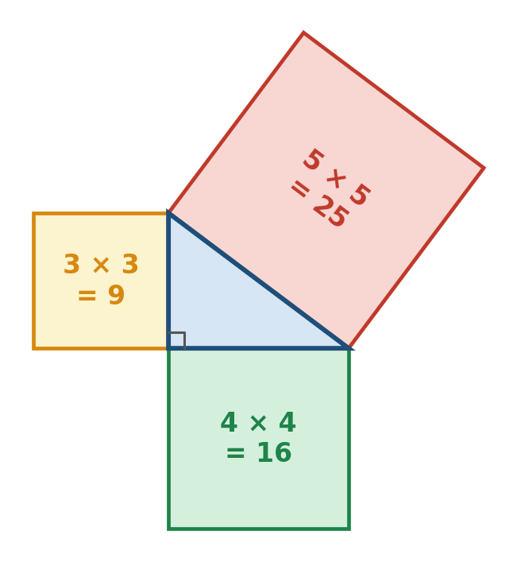
Mengapa rumus ini benar? (bukti dengan luas)
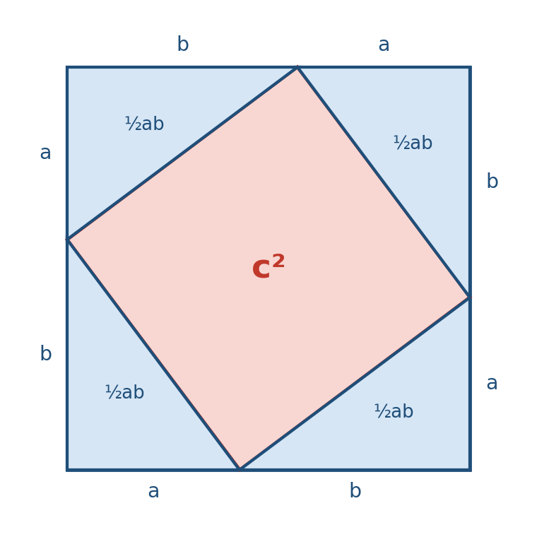
1. Susun 4 segitiga siku-siku identik menjadi persegi besar bersisi (a + b).
2. Luas persegi besar = (a + b)2 = a2 + 2ab + b2.
3. Luas yang sama = 4 × (½ab) + c2 = 2ab + c2.
4. Samakan: a2 + 2ab + b2 = 2ab + c2, sehingga a2 + b2 = c2.
B.2 Cara Memakai Rumus
Ikuti tiga langkah ini setiap kali:
- Langkah 1: gambar sketsa dan tandai sudut siku-siku.
- Langkah 2: tentukan sisi miring (di hadapan sudut siku-siku).
- Langkah 3: pilih rumus sesuai yang dicari.
| Yang dicari | Rumus | Kata kunci |
|---|---|---|
| Sisi miring (c) | c = √a2 + b2 | dijumlahkan |
| Sisi tegak (a) | a = √c2 − b2 | dikurangkan |
| Sisi tegak (b) | b = √c2 − a2 | dikurangkan |
- Langkah 1c2 = 62 + 82 = 36 + 64 = 100
- Langkah 2c = √100 = 10 cm
- Langkah 1a2 = 132 − 52 = 169 − 25 = 144
- Langkah 2a = √144 = 12 cm
- Langkah 1c2 = 49 + 81 = 130, c = √130 ≈ 11,40
- Langkah 2130 = 2 × 5 × 13 tidak punya faktor kuadrat sempurna, jadi akar dibiarkan. Contoh lain: 36 + 81 = 117 = 9 × 13, sehingga c = √117 = 3√13.
- Langkah 1b2 = 49 − 16 = 33, b = √33 ≈ 5,74
B.3 Tripel Pythagoras
Tripel Pythagoras adalah tiga bilangan bulat positif (a, b, c) yang memenuhi a2 + b2 = c2. Menghafalnya menghemat banyak waktu di TKA.
| Tripel dasar | Cek | Kelipatan yang sering muncul |
|---|---|---|
| 3, 4, 5 | 9 + 16 = 25 | 6, 8, 10 | 9, 12, 15 | 12, 16, 20 | 15, 20, 25 |
| 5, 12, 13 | 25 + 144 = 169 | 10, 24, 26 | 15, 36, 39 |
| 8, 15, 17 | 64 + 225 = 289 | 16, 30, 34 |
| 7, 24, 25 | 49 + 576 = 625 | 14, 48, 50 |
| 20, 21, 29 | 400 + 441 = 841 | - |
| 9, 40, 41 | 81 + 1600 = 1681 | - |
- Langkah 118 = 6 × 3 dan 24 = 6 × 4, jadi ini kelipatan 6 dari (3, 4, 5).
- Langkah 2Sisi miring = 6 × 5 = 30
- Langkah 3Cek: 182 + 242 = 324 + 576 = 900 = 302. Benar.
Pengayaan (Level 3): membuat tripel sendiri
Untuk bilangan bulat m > n > 0, bilangan (m2 − n2, 2mn, m2 + n2) selalu tripel Pythagoras. Contoh: m = 2, n = 1 menghasilkan (3, 4, 5); m = 3, n = 2 menghasilkan (5, 12, 13); m = 4, n = 3 menghasilkan (7, 24, 25).
B.4 Kebalikan Teorema Pythagoras: Jenis Segitiga
Teorema ini bisa dibalik. Jika sisi-sisi segitiga diketahui, kita bisa menentukan jenisnya. Misalkan c adalah sisi terpanjang:
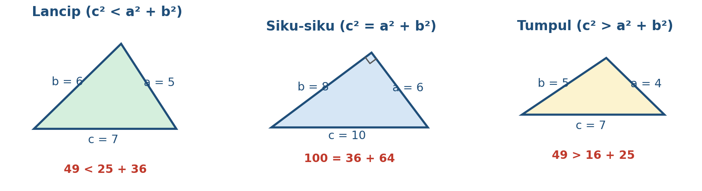
- Langkah 1Sisi terpanjang c = 16, c2 = 256
- Langkah 2a2 + b2 = 81 + 144 = 225
- Langkah 3256 > 225, maka segitiga tumpul, dengan sudut tumpul di hadapan sisi 16.
Latihan B
- Sisi tegak 15 dan 20. Hitung sisi miringnya. (L1)✅ Jawaban: 25
- Sisi miring 26 dan satu sisi tegak 10. Hitung sisi tegak lainnya. (L1)✅ Jawaban: 24
- Sisi tegak 6 dan 9. Hitung sisi miring dalam bentuk akar paling sederhana. (L1)✅ Jawaban: 3<span class="rad">√<span class="rv">13</span></span>
- Manakah yang merupakan tripel Pythagoras? (a) 9, 12, 15 (b) 8, 10, 12 (c) 11, 60, 61 (d) 14, 48, 50 (L1)✅ Jawaban: (a), (c), (d); (b) bukan karena 64 + 100 = 164 ≠ 144
- Tentukan jenis segitiga dengan sisi 7, 9, dan 11. (L2)✅ Jawaban: Lancip (49 + 81 = 130 >
- Segitiga siku-siku memiliki dua sisi 9 dan 12, sisi ketiganya x. Tentukan semua kemungkinan nilai x. (L3)✅ Jawaban: x = 15 (jika sisi miring) atau x = 3<span class="rad">√<span class="rv">7</span></span> (jika sisi tegak, x<sup>2</sup> = 144 − 81 = 63)
C. Teorema Pythagoras pada Bangun Datar
Kunci bab ini satu kalimat: cari atau buat segitiga siku-siku di dalam bangun datar. Biasanya dengan menarik diagonal, tinggi, atau jari-jari.
C.1 Persegi dan Persegi Panjang
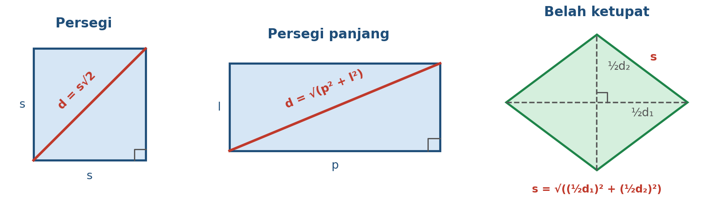
- Langkah 1d = 10√2 ≈ 14,14 cm
- Langkah 1s = d/√2 = 10/√2 = 10√2/2 = 5√2 cm
- Langkah 2Luas = s2 = (5√2)2 = 25 × 2 = 50 cm2
- Langkah 3Pintasan: luas persegi = d2/2 = 100/2 = 50.
- Langkah 1d = √144 + 25 = √169 = 13 cm
C.2 Segitiga Sama Kaki, Sama Sisi, dan Segitiga Istimewa
Pada segitiga sama kaki, tinggi dari puncak membagi alas menjadi dua sama panjang. Hasilnya dua segitiga siku-siku.
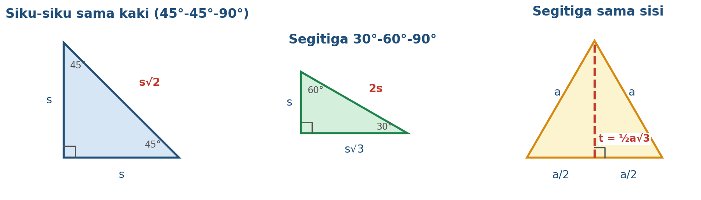
- Langkah 1Setengah alas = 8, maka t = √102 − 82 = √36 = 6 cm
- Langkah 2Luas = ½ × 16 × 6 = 48 cm2
- Langkah 1t = ½ × 12 × √3 = 6√3 cm
- Langkah 2Luas = ½ × 12 × 6√3 = 36√3 cm2
- Langkah 1Sisi lain: 5√3 cm dan sisi miring 10 cm
C.3 Belah Ketupat dan Layang-layang
Diagonal belah ketupat saling tegak lurus dan saling membagi dua, sehingga terbentuk 4 segitiga siku-siku yang sama. Pada layang-layang, diagonal juga saling tegak lurus.
- Langkah 1Setengah diagonal: 8 dan 6
- Langkah 2Sisi = √82 + 62 = √100 = 10 cm
- Langkah 3Keliling = 4 × 10 = 40 cm
- Langkah 4Luas = ½ × 16 × 12 = 96 cm2
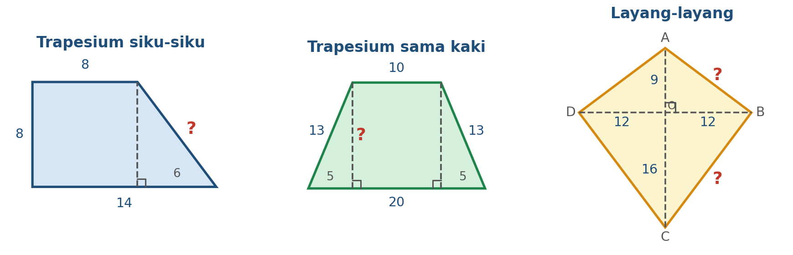
- Langkah 1BO = 12. AB = √92 + 122 = √225 = 15
- Langkah 2BC = √162 + 122 = √400 = 20
- Langkah 3Keliling = 2(15 + 20) = 70
- Langkah 4AC = 25, luas = ½ × 25 × 24 = 300
C.4 Trapesium
Tarik garis tinggi dari ujung sisi sejajar yang pendek. Terbentuk segitiga siku-siku dengan alas = selisih dua sisi sejajar (dibagi dua pada trapesium sama kaki).
- Langkah 1Selisih sisi sejajar = 14 − 8 = 6
- Langkah 2Sisi miring = √62 + 82 = 10
- Langkah 1Selisih = 10, tiap sisi 10 : 2 = 5
- Langkah 2Tinggi = √132 − 52 = 12
- Langkah 3Luas = ½(20 + 10) × 12 = 180
C.5 Lingkaran
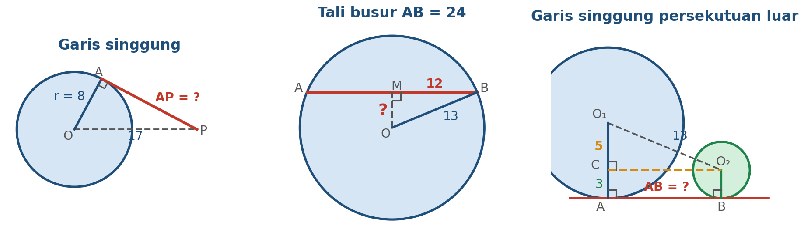
- Langkah 1PA = √172 − 82 = √289 − 64 = √225 = 15 cm
- Langkah 1Setengah tali busur = 12
- Langkah 2Jarak = √132 − 122 = 5 cm
- Langkah 1Luar: l = √132 − (8 − 3)2 = √169 − 25 = 12 cm
- Langkah 2Dalam: l = √172 − (5 + 3)2 = √289 − 64 = 15 cm
C.6 Pythagoras dan Kesebangunan: Tinggi pada Sisi Miring
Tarik garis tinggi BD dari sudut siku-siku B tegak lurus sisi miring AC. Terbentuk tiga segitiga siku-siku yang sebangun (ABC, ABD, CBD). Dari kesebangunan diperoleh:
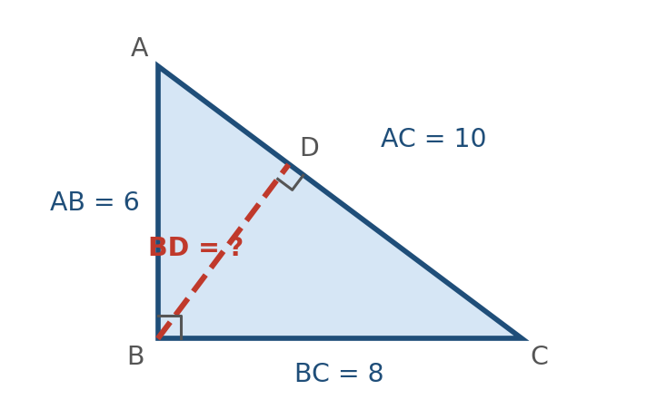
- Langkah 1BD = (6 × 8)/10 = 4,8
- Langkah 2AD = 62/10 = 3,6, DC = 82/10 = 6,4
- Langkah 3Cek: BD2 = 23,04 dan AD × DC = 3,6 × 6,4 = 23,04. Benar.
Latihan C
- Diagonal persegi 18 cm. Hitung panjang sisinya. (L1)✅ Jawaban: 9<span class="rad">√<span class="rv">2</span></span> cm
- Persegi panjang 24 cm × 7 cm. Hitung diagonalnya. (L1)✅ Jawaban: 25 cm
- Diagonal belah ketupat 30 cm dan 16 cm. Hitung sisi dan kelilingnya. (L2)✅ Jawaban: sisi 17 cm, keliling 68 cm
- Segitiga sama sisi bersisi 14 cm. Hitung tinggi dan luasnya. (L2)✅ Jawaban: tinggi 7<span class="rad">√<span class="rv">3</span></span> cm, luas 49<span class="rad">√<span class="rv">3</span></span> cm<sup>2</sup>
- Trapesium sama kaki: sisi sejajar 30 cm dan 14 cm, kaki 17 cm. Hitung tinggi dan luasnya. (L2)✅ Jawaban: tinggi 15 cm, luas 330 cm<sup>2</sup>
- Lingkaran berjari-jari 10 cm dengan tali busur 16 cm. Hitung jarak pusat ke tali busur. (L2)✅ Jawaban: 6 cm
- (a) Jarak pusat dua lingkaran 17 cm, jari-jari 11 cm dan 3 cm. Hitung panjang garis singgung persekutuan luar. (b) Jarak pusat 25 cm, jari-jari 9 cm dan 6 cm. Hitung garis singgung persekutuan dalam. (L2)✅ Jawaban: 7a 15 cm 7b 20 cm
- Segitiga siku-siku ABC siku-siku di B dengan AB = 9 dan BC = 12. Hitung tinggi BD dari B ke AC. (L3)✅ Jawaban: AC = 15, BD = 9 × 12 / 15 = 7,2
D. Jarak Dua Titik pada Bidang Koordinat
Jika dua titik dihubungkan, selisih koordinat x dan selisih koordinat y membentuk dua sisi tegak segitiga siku-siku, dan jaraknya adalah sisi miring.
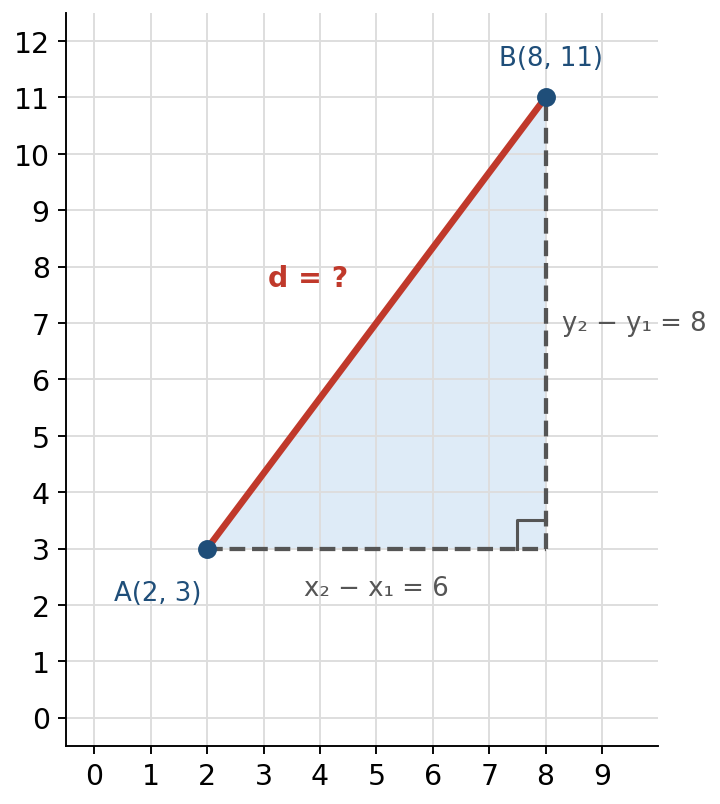
- Langkah 1x2 − x1 = 6 dan y2 − y1 = 8
- Langkah 2d = √36 + 64 = √100 = 10
- Langkah 1x2 − x1 = 2 − (−3) = 5 dan y2 − y1 = −7 − 5 = −12
- Langkah 2d = √25 + 144 = 13
- Langkah 3Hasil kuadrat selalu positif, jadi tanda negatif tidak mengganggu. Yang sering salah adalah mengurangkan: 2 − (−3) = 5, bukan −1.
- Langkah 1AB2 = 32 + 42 = 25, BC2 = 42 + (−3)2 = 25, AC2 = 72 + 12 = 50
- Langkah 2AB2 + BC2 = 50 = AC2
- Langkah 3Segitiga siku-siku sama kaki dengan sudut siku-siku di B.
Latihan D
- Hitung jarak P(−1, −2) ke Q(5, 6). (L1)✅ Jawaban: 10
- Hitung jarak A(2, −3) ke B(−10, 2). (L1)✅ Jawaban: 13
- Titik (x, 0) berjarak 5 satuan dari titik (3, 4). Tentukan semua nilai x. (L2)✅ Jawaban: x = 0 atau x = 6 (dari (x − 3)<sup>2</sup> + 16 =
- Tentukan jenis segitiga dengan titik K(0, 0), L(8, 6), M(−6, 8). (L3)✅ Jawaban: KL<sup>2</sup> = 100, KM<sup>2</sup> = 100, LM<sup>2</sup> = 200: segitiga siku-siku sama kaki di K
E. Teorema Pythagoras pada Bangun Ruang
Bangun ruang terlihat rumit, tetapi caranya sama: temukan segitiga siku-siku tersembunyi, hitung satu per satu, lalu lanjutkan ke segitiga berikutnya.
E.1 Kubus
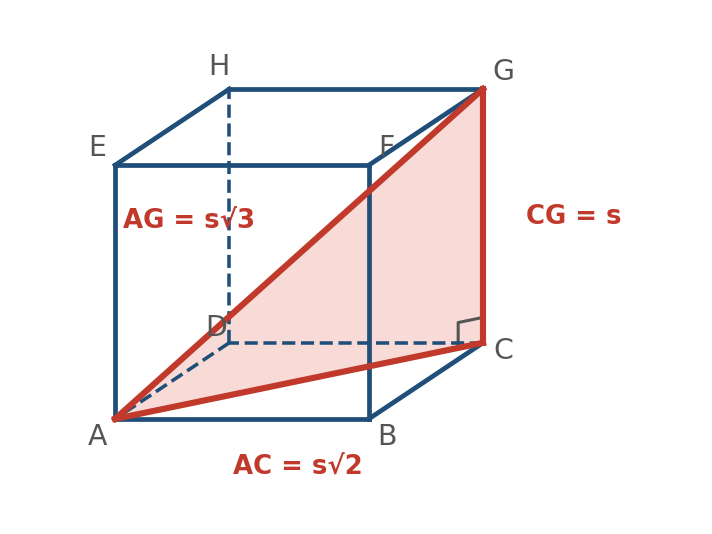
Pada alas, segitiga ABC siku-siku di B, sehingga AC2 = s2 + s2 dan AC = s√2 (diagonal sisi). Lalu segitiga ACG siku-siku di C: AG2 = AC2 + CG2 = 2s2 + s2 = 3s2, sehingga AG = s√3 (diagonal ruang).
- Langkah 1Diagonal sisi = 6√2 cm, diagonal ruang = 6√3 cm
- Langkah 29√3 = s√3, maka s = 9 cm
E.2 Balok
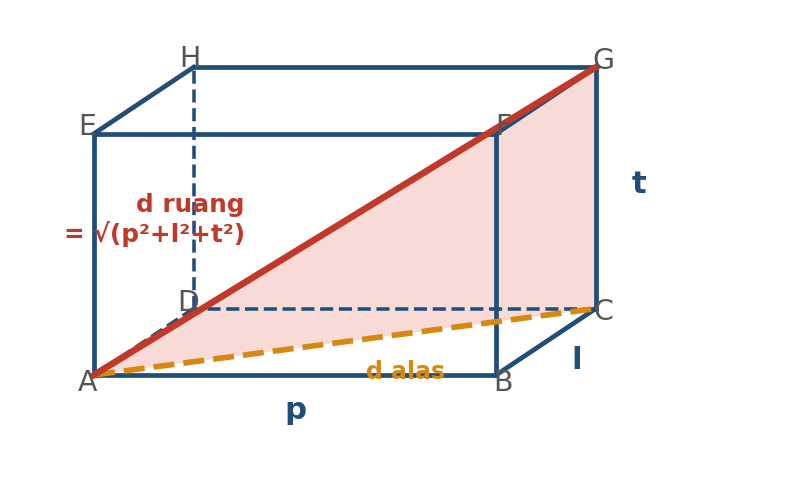
Diagonal alas: d2 = p2 + l2. Diagonal ruang: D2 = d2 + t2 = p2 + l2 + t2.
- Langkah 1√144 + 16 + 9 = √169 = 13 cm
- Langkah 2√36 + 9 + 4 = √49 = 7 cm
E.3 Limas, Kerucut, dan Tabung
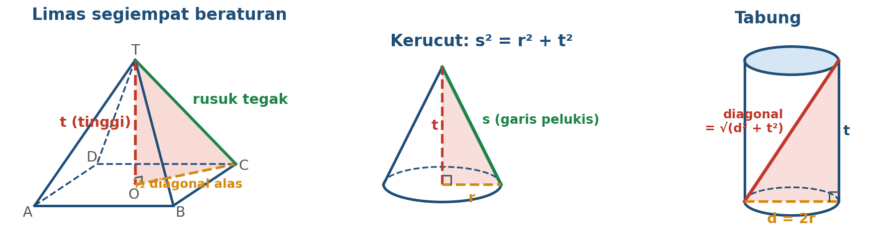
- Langkah 1Setengah sisi alas = 8
- Langkah 2t = √102 − 82 = 6 cm
- Langkah 1s = √25 + 144 = 13 cm
- Langkah 2Luas selimut = πrs = π × 5 × 13 = 65π cm2
- Langkah 1Panjang = √62 + 82 = 10 cm
E.4 Jarak pada Bangun Ruang
TKA mencakup jarak dua titik, titik ke garis, titik ke bidang, dua garis, dan dua bidang. Jarak selalu diukur sepanjang garis yang tegak lurus. Contoh berikut memakai kubus ABCD.EFGH dengan rusuk 6 cm.
- Langkah 1Jarak titik A ke garis CG: AC tegak lurus CG, jadi jaraknya AC = 6√2 cm.
- Langkah 2Jarak garis AE ke garis CG (sejajar) = AC = 6√2 cm.
- Langkah 3Jarak garis AB dan CG (bersilangan): ruas BC tegak lurus keduanya, jaraknya = BC = 6 cm.
- Langkah 4Jarak bidang ABFE ke bidang DCGH (sejajar) = rusuk = 6 cm.
- Langkah 1EO = tinggi segitiga sama sisi = ½ × 6√2 × √3 = 3√6 cm
- Langkah 2Cek dengan Pythagoras: EO2 = AE2 + AO2 = 36 + 18 = 54, EO = √54 = 3√6.
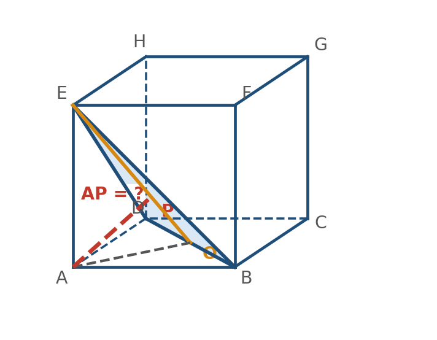
- Langkah 1AO = 3√2, AE = 6, EO = 3√6
- Langkah 2Dengan luas: ½ × EO × AP = ½ × AO × AE
- Langkah 3AP = (3√2 × 6) / (3√6) = 6/√3 = 2√3 cm
Latihan E
- Kubus rusuk 10 cm. Hitung diagonal sisi dan diagonal ruangnya. (L1)✅ Jawaban: 10<span class="rad">√<span class="rv">2</span></span> cm dan 10<span class="rad">√<span class="rv">3</span></span> cm
- Diagonal ruang sebuah kubus 12√3 cm. Hitung rusuknya. (L1)✅ Jawaban: 12 cm
- Balok 8 × 9 × 12 cm. Hitung diagonal ruangnya. (L1)✅ Jawaban: 17 cm (64 + 81 + 144 =
- Kerucut berjari-jari 7 cm dan tinggi 24 cm. Hitung garis pelukisnya. (L1)✅ Jawaban: 25 cm
- Limas segiempat beraturan beralas persegi sisi 10 cm dan tinggi sisi tegak 13 cm. Hitung tinggi limas. (L2)✅ Jawaban: 12 cm
- Kubus rusuk 4 cm. Hitung jarak titik E ke garis BD dan jarak titik A ke bidang BDE. (L3)✅ Jawaban: E ke BD = 2<span class="rad">√<span class="rv">6</span></span> cm; A ke bidang BDE = 4<span class="rad">√<span class="rv">3</span></span>/3 cm
- Tabung berdiameter 10 cm dan tinggi 24 cm. Hitung panjang garis lurus terpanjang di dalam tabung. (L2)✅ Jawaban: 26 cm
F. Soal Cerita: Memodelkan Masalah
Soal cerita Level 2 menguji kemampuan memodelkan: mengubah cerita menjadi gambar dan persamaan matematika.
Empat Langkah Menyelesaikan Soal Cerita
- 1. Baca dan tandai apa yang diketahui dan apa yang ditanya.
- 2. Gambar sketsa dan beri tanda siku-siku (tanah dan dinding, timur dan utara, dan sebagainya).
- 3. Pilih segitiga siku-siku, tentukan mana sisi miringnya, lalu pakai rumus.
- 4. Periksa: satuan benar, sisi miring paling panjang, jawaban masuk akal.
| Kata dalam soal | Biasanya menjadi |
|---|---|
| tangga bersandar pada dinding | tangga = sisi miring; dinding dan tanah = sisi tegak |
| ke utara lalu ke timur; jarak terpendek | dua langkah = sisi tegak; jarak lurus = sisi miring |
| tiang diikat kawat | tiang dan tanah = sisi tegak; kawat = sisi miring |
| layar TV, layang-layang dan benang | diagonal atau benang = sisi miring |
- Langkah 1Jarak = √132 − 122 = √25 = 5 m
- Langkah 1Jalan pintas = √1202 + 502 = √16.900 = 130 m
- Langkah 2Hemat = (120 + 50) − 130 = 40 m
- Langkah 1Misal bagian tegak x, bagian patah = 16 − x
- Langkah 2x2 + 82 = (16 − x)2
- Langkah 3x2 + 64 = 256 − 32x + x2
- Langkah 432x = 192, maka x = 6 m
- Langkah 5Cek: bagian patah 10 m, dan 62 + 82 = 102. Benar.
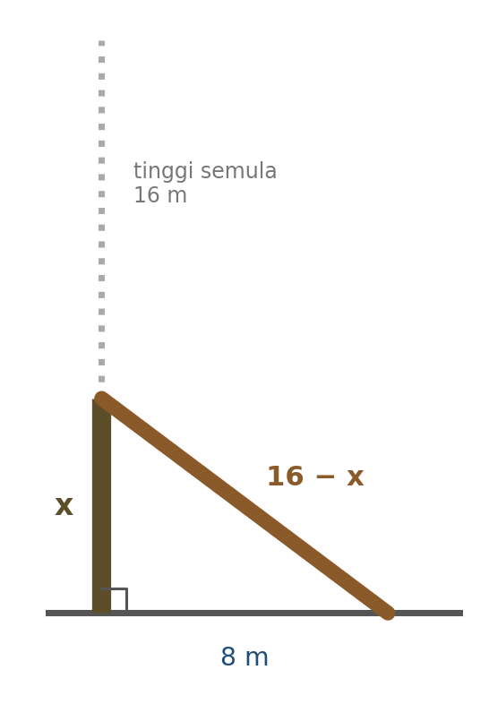
- Langkah 1Awal: tinggi = √625 − 49 = 24 m
- Langkah 2Setelah turun 4 m: tinggi 20 m, jarak kaki = √625 − 400 = 15 m
- Langkah 3Pergeseran = 15 − 7 = 8 m
Latihan F
- Tangga 26 m disandarkan ke dinding. Kaki tangga 10 m dari dinding. Berapa tinggi ujung atas tangga? (L2)✅ Jawaban: 24 m
- Antena setinggi 15 m ditahan kawat dari puncak ke tanah sepanjang 17 m. Berapa jarak ujung kawat di tanah dari kaki antena? (L2)✅ Jawaban: 8 m
- Andi berjalan 9 km ke barat, lalu 12 km ke selatan. Berapa jarak lurus ke titik awal? (L2)✅ Jawaban: 15 km
- Kapal A berlayar 24 km ke utara dan kapal B 7 km ke timur dari titik yang sama. Berapa jarak kedua kapal? (L2)✅ Jawaban: 25 km
- Rumah selebar 24 m beratap pelana dengan tinggi atap 5 m dari tengah. Hitung panjang kaki atap (dari tepi bawah ke puncak). (L2)✅ Jawaban: 13 m
- Pohon setinggi 18 m patah, ujungnya menyentuh tanah 12 m dari pangkal. Berapa tinggi bagian yang masih tegak? (L3)✅ Jawaban: x<sup>2</sup> + 144 = (18 − x)<sup>2</sup>, maka x = 5 m
G. Strategi TKA dan Kesalahan Umum
Kesalahan yang Paling Sering Terjadi
| Kesalahan | Contoh | Cara yang benar |
|---|---|---|
| Mengurangi padahal mencari sisi miring | c = √82 − 62 | Sisi miring: tambah kuadrat. Sisi tegak: kurang. |
| Lupa mengakarkan | c2 = 100, jawab 100 | Akarkan di langkah akhir: c = 10. |
| Salah menentukan sisi miring | Memilih sisi yang tampak panjang | Sisi miring berhadapan dengan sudut 90°. |
| (a + b)2 dikira a2 + b2 | (3 + 4)2 = 25 | Kuadratkan dulu masing-masing: 9 + 16 = 25. |
| Bentuk akar tidak disederhanakan | √72 | Tulis 6√2. |
| Salah pada trapesium | Memakai sisi sejajar sebagai alas segitiga | Alas segitiga = selisih sisi sejajar (dibagi dua pada trapesium sama kaki). |
| Salah satuan | Meter dan sentimeter bercampur | Samakan satuan sebelum menghitung. |
Strategi Mengerjakan Soal TKA
- Hafalkan tripel: 3-4-5, 5-12-13, 8-15-17, 7-24-25, dan kelipatannya.
- Perkirakan hasil sebelum memilih jawaban: sisi miring lebih panjang dari sisi tegak mana pun dan kurang dari jumlah keduanya.
- Gambar sketsa, bahkan jika soal sudah ada gambar.
- Pada soal pilihan ganda kompleks dan benar-salah, periksa setiap pernyataan satu per satu.
- Soal Level 3 biasanya menggabungkan dua konsep (Pythagoras dan luas, Pythagoras dan persamaan). Pecah menjadi dua langkah.
- Gunakan cara mengecek: kuadratkan jawaban dan masukkan kembali ke a2 + b2 = c2.
H. Rangkuman Rumus
| Topik | Rumus |
|---|---|
| Teorema Pythagoras | a2 + b2 = c2 (c sisi miring) |
| Jenis segitiga (c terpanjang) | c2 = a2 + b2 siku-siku; c2 < a2 + b2 lancip; c2 > a2 + b2 tumpul |
| Diagonal persegi | d = s√2 |
| Diagonal persegi panjang | d = √p2 + l2 |
| Segitiga sama sisi | t = ½a√3; luas = ¼a2√3 |
| Segitiga 45°-45°-90° / 30°-60°-90° | s : s : s√2 / s : s√3 : 2s |
| Belah ketupat | sisi = √(½d1)2 + (½d2)2 |
| Trapesium sama kaki | tinggi = √(kaki2 − ((a − b)/2)2) |
| Garis singgung dari titik P | PA = √OP2 − r2 |
| Tali busur | jarak ke pusat = √r2 − (½ tali busur)2 |
| Garis singgung persekutuan | luar: √p2 − (r1 − r2)2; dalam: √p2 − (r1 + r2)2 |
| Tinggi pada sisi miring | BD = AB × BC / AC; AB2 = AD × AC |
| Jarak dua titik | d = √(x2 − x1)2 + (y2 − y1)2 |
| Kubus | diagonal sisi s√2; diagonal ruang s√3 |
| Balok | diagonal ruang = √p2 + l2 + t2 |
| Kerucut | s2 = r2 + t2 |
| Tabung | diagonal = √(2r)2 + t2 |
Prediksi Soal TKA Matematika: Geometri dan Pengukuran
Soal disusun berdasarkan matriks asesmen dan pola umum soal TKA, bukan soal resmi. Jawab dulu, lalu pembahasan Cara Cepat dan Cara Lengkap akan muncul.
Level 1: Pengetahuan dan Pemahaman
- Langkah 1c2 = 92 + 122 = 81 + 144 = 225, maka c = 15 (kelipatan 3 dari 3-4-5).
- Langkah 1A: 36 + 64 = 100 = 102 (benar)
- Langkah 2B: 64 + 225 = 289 = 172 (benar)
- Langkah 3C: 81 + 144 = 225, padahal 162 = 256 (salah)
- Langkah 4D: 144 + 256 = 400, padahal 242 = 576 (salah)
- Langkah 5E: 100 + 576 = 676 = 262 (benar)
- Langkah 1(1) 25 + 144 = 169 = 132, siku-siku. Benar
- Langkah 2(2) 36 + 49 = 85 > 81, maka lancip, bukan tumpul. Salah
- Langkah 3(3) 9 + 16 = 25 < 36, maka tumpul. Benar
- Langkah 4(4) 81 + 1600 = 1681 = 412, maka siku-siku, bukan lancip. Salah
- Langkah 1Selisih x = −4 − 2 = −6, selisih y = 7 − (−1) = 8
- Langkah 2d = √36 + 64 = 10
- Langkah 1Diagonal ruang kubus = s√3 = 5√3 cm.
Level 2: Aplikasi
- Langkah 1Tangga = sisi miring 17, kaki 8. Tinggi = √172 − 82 = √289 − 64 = √225 = 15 m.
- Langkah 1Setengah diagonal = 5 dan 12. Sisi = √25 + 144 = 13.
- Langkah 2Keliling = 4 × 13 = 52 cm.
- Langkah 1Selisih sisi sejajar = 25 − 9 = 16, tiap sisi 8.
- Langkah 2Tinggi = √102 − 82 = 6.
- Langkah 3Luas = ½ × (25 + 9) × 6 = 102 cm2.
- Langkah 1D = √42 + 42 + 72 = √16 + 16 + 49 = √81 = 9 cm.
- Langkah 1t = √102 − 62 = 8.
- Langkah 2V = ⅓ × π × 62 × 8 = 96π cm3.
- Langkah 1l = √262 − (15 − 5)2 = √676 − 100 = √576 = 24 cm.
Level 3: Penalaran
- Langkah 1Segitiga BCH siku-siku di C (BC tegak lurus bidang CDHG). BC = 6, CH = 6√2, BH = 6√3.
- Langkah 2Jarak C ke BH = tinggi dari C. Dengan luas: ½ × BH × CQ = ½ × BC × CH.
- Langkah 3CQ = (6 × 6√2)/(6√3) = 6√2/√3 = 2√6 cm.
- Langkah 4Pengecoh: 3√6 adalah jarak titik E ke BD, bukan C ke BH.
- Langkah 1Misal bagian tegak x, bagian patah 16 − x.
- Langkah 2x2 + 82 = (16 − x)2, sehingga x2 + 64 = 256 − 32x + x2
- Langkah 332x = 192, maka x = 6 m.
- Langkah 1AB2 + BC2 = 81 + 144 = 225, sedangkan AC2 = 256. Karena 256 > 225, segitiga tumpul.
- Langkah 2Sudut tumpul berada di hadapan sisi terpanjang AC, yaitu sudut B.
- Langkah 3A salah: 9 + 12 > 16 hanya syarat segitiga ada. B salah arah pertidaksamaan. C salah titik sudut. E salah: jenis segitiga tetap bisa ditentukan.
- Langkah 1A benar: (2a)2 + (2b)2 = 4(a2 + b2) = 4c2 = (2c)2.
- Langkah 2B salah: dari (3, 4, 5) menjadi (4, 5, 6): 16 + 25 = 41 ≠ 36.
- Langkah 3C salah: dari (3, 4, 5) menjadi (9, 16, 25): 81 + 256 = 337 ≠ 625.
- Langkah 4D benar: itu bentuk lain dari a2 + b2 = c2.
- Langkah 5E benar: (a + b)2 = a2 + 2ab + b2 = c2 + 2ab > c2, maka a + b > c.
- Langkah 1Awal: tinggi = √625 − 49 = 24 m.
- Langkah 2Setelah turun 4 m, tinggi 20 m, jarak kaki = √625 − 400 = 15 m.
- Langkah 3Pergeseran = 15 − 7 = 8 m.
- Langkah 1x2 + (x + 7)2 = (x + 8)2
- Langkah 22x2 + 14x + 49 = x2 + 16x + 64
- Langkah 3x2 − 2x − 15 = 0, (x − 5)(x + 3) = 0, x = 5 (x = −3 dibuang).
- Langkah 4Sisi 5, 12, 13. Keliling = 30 cm.
- Langkah 1Diagonal alas = 6√2 × √2 = 12, setengahnya 6.
- Langkah 2Tinggi limas = √102 − 62 = 8.
- Langkah 3Luas alas = (6√2)2 = 72.
- Langkah 4V = ⅓ × 72 × 8 = 192 cm3.
- Langkah 1Misal O titik tengah BD. AO = 3√2, AE = 6, EO = √36 + 18 = 3√6.
- Langkah 2BD tegak lurus bidang AOE, sehingga jarak A ke bidang BDE = jarak A ke garis EO.
- Langkah 3Dengan luas segitiga AOE (siku-siku di A): jarak = (AO × AE)/EO = (3√2 × 6)/(3√6) = 6/√3 = 2√3 cm.